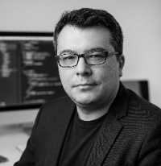

GenAI & Agentic Systems
LLM uygulamaları, RAG, function calling, çoklu ajan orkestrasyonu, context engineering ve kurumsal entegrasyonlar.
AI/ML Architect · Principal Data Scientist · Technical Leader
Karmaşık veri ve yapay zekâ problemlerini; güvenilir mimarilere, üretime alınan ürünlere ve ölçülebilir değere dönüştüren teknik lider.

01 / YAKLAŞIM
Teknik derinliği iş odağıyla birleştiriyorum. Doğru problemi seçmekten, güvenli mimariyi kurmaya ve çalışan sistemi canlıda izlemeye kadar.
LLM uygulamaları, RAG, function calling, çoklu ajan orkestrasyonu, context engineering ve kurumsal entegrasyonlar.
Anomali tespiti, risk modelleme, nedensel çıkarım, tahminleme ve optimizasyon ile karar süreçlerini güçlendiren modeller.
Ölçeklenebilir API'ler, asenkron mikroservisler, model izleme, CI/CD ve on-prem / cloud hibrit mimariler.
Ürün yol haritası, ekip mentorluğu, paydaş yönetimi, PoC'den üretime geçiş ve teknik/iş ekipleri arasında köprü.
02 / SEÇİLİ PROJELER
Finanstan kimlik doğrulamaya, üretim ortamına taşınmış veya araştırma derinliğiyle geliştirilmiş seçili çalışmalar.
500'den fazla BIST hissesi için anlık ve gün sonu analiz üreten, Microsoft Teams üzerinden çalışan çoklu ajan sistemi.
Opsiyon ve swap işlemleri için açıklanabilir, ağırlıklı Isolation Forest tabanlı anomali tespit platformu.
ICAO uyumluluğu ve yapıştırılmış fotoğraf sahteciliğini; YOLO, doku ve görüntü kalite özellikleriyle tespit eden çözüm.
Politika faizi değişimlerinin mevduat, döviz ve beklenti kanalları üzerindeki etkisini nedensel öğrenme ile modelleyen senaryo sistemi.
İl düzeyinde aylık verilerle ekonomik kırılganlıkları izleyen; uzamsal, survival ve derin öğrenme bileşenli araştırma tasarımı.
03 / DENEYİM
Bankacılıkta üretken yapay zekâ, anomali tespiti, yatırım teknolojileri ve görüntü işleme projelerinde mimari ve teknik liderlik.
Bankacılık müşterileri için risk analitiği, IFRS 9 ve ileri analitik projelerinde teknik liderlik; 8 kişilik ekibe mentorluk.
Müşteri analitiği, tahminleme ve karar destek projelerinde veri bilimi danışmanlığı.
Büyük ölçekli kamu sistemleri ve kurumsal bilgi teknolojileri deneyimi.
04 / AKADEMİ & PAYLAŞIM
Ekonomi doktorası, nedensel yapay zekâ araştırmaları ve üniversite düzeyinde ders deneyimiyle teknik pratiği teorik temelle birleştiriyorum.
Bankacılık için Nedensel Yapay Zekâ Senaryo Analizi · 2021
Karar Analizi · Lisansüstü
İstatistik · Lisans
Causal AI · Early Warning Systems · Survival Analysis · Optimization
05 / GİRİŞİMCİLİK
Sürdürülebilir, erişilebilir, akıllı ve analitik çözümler üreten teknoloji girişimi.
vipsi.co'yu ziyaret et ↗06 / BLOG
Üretken yapay zekâ, karar bilimi ve üretim sistemleri üzerine yazılar.
YENİ BİR PROJE Mİ VAR?
AI stratejisi, ürün geliştirme, teknik liderlik veya eğitim ihtiyaçlarınız için iletişime geçin.
İletişime geç ↗